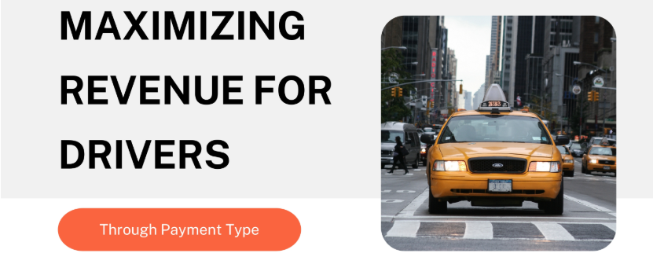
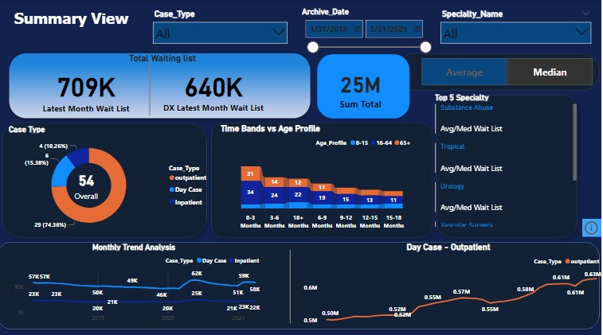

Technologies: Python (Scipy,Matplotlib,Pandas,Seaborn)
Objective: The project aimed to maximize driver revenue by analyzing payment methods.
Result: Hypothesis testing & Analysis revealed credit card payment could lead to higher driver earnings, hence credit card usage should be promoted.

Technologies: SQL (SQL server)
Objective: This project involved analyzing customer behavior and spending patterns, like customer preferences, visit frquency, membership imapct.
Result: Identified key products driving Gold membership sign-ups and the most popular items by loyalty points.

Technologies: Power BI (Power Query, DAX ,Filter, Slicer)
Objective: Analyzed patient waiting list data to optimize resource allocation based on age, specialty, and
patient categories
Result: Identified key trends, including higher outpatient numbers and specialty-specific waitlists, enabling data
driven decisions for healthcare providers.

Technologies: Python (Geopandas , Shapley)
Objective: Utilized spatial joins, relationships, CRS, operations and Visualization to analyse various aspects.